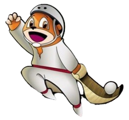

<ion-content [fullscreen]="true" class="ion-padding">
  <div class="background">
    

    
    

    <div class="character-section">
      <div class="character-wrapper character-mari">
        
      </div>

      

      <div class="dialog">
        <div class="dialog-arrow"></div>
        <p>
          Jai-Alai pilotalekua mundu osoan ezaguna eta garrantzitsua da. Bertan, Euskal Herrian sortutako bi kirol jokatzen dira: Esku pilota eta Zesta-punta.

          Esku pilotan, pilota frontoiko hormaren kontra jotzen da eskuarekin.
          Zesta-puntan, ordea, jokalariek "U" formako zesta bat erabiltzen dute pilota jaurtitzeko.
          Kirol hauetako jokalariei pilotari eta zesta-puntalari deitzen zaie, eta partidak zein txapelketak hainbat frontoitan jokatzen dituzte.
        </p>
      </div>
    </div>

    <button class="next-button" (click)="goToNextPage()">HURRENGOA</button>
  </div>
</ion-content>